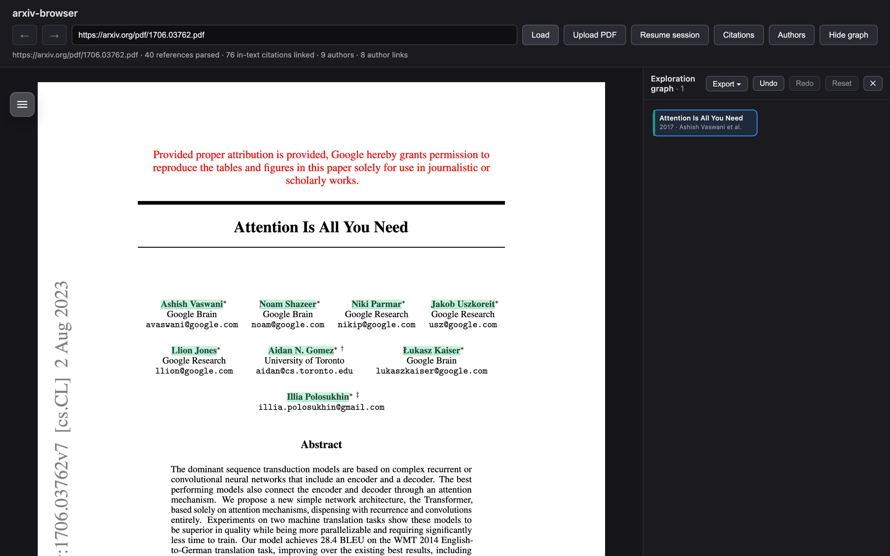
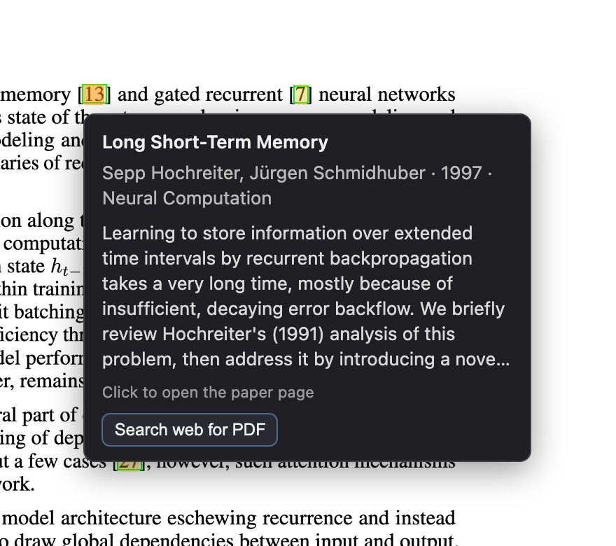
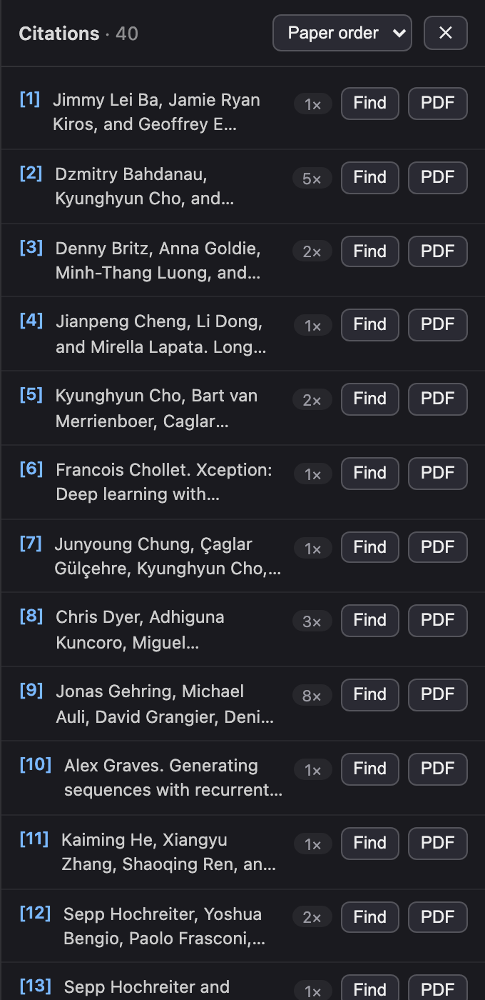
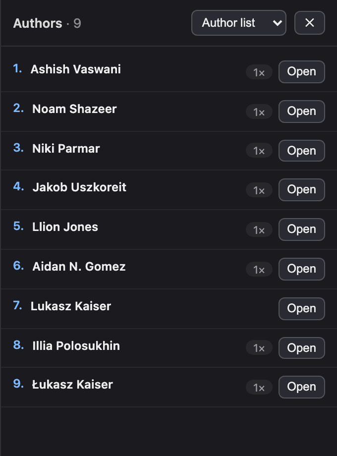
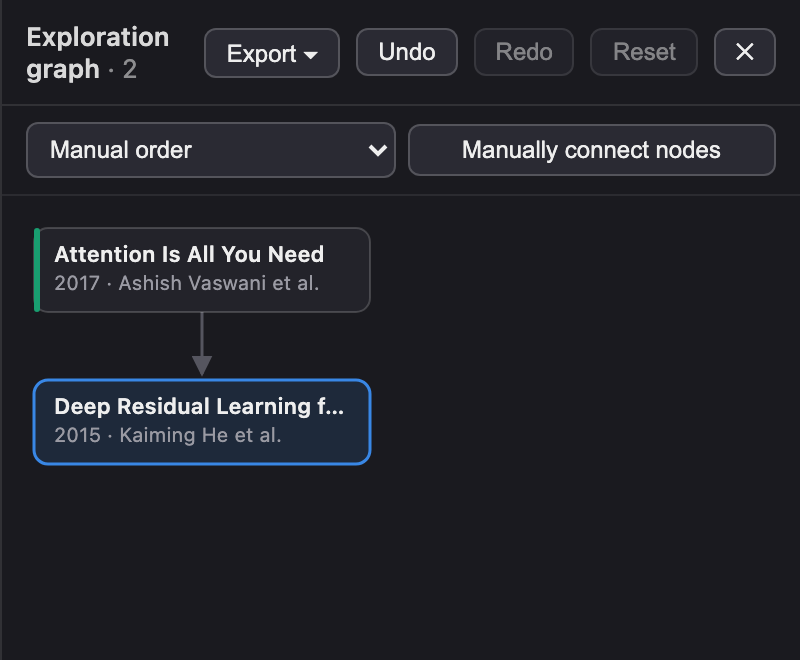
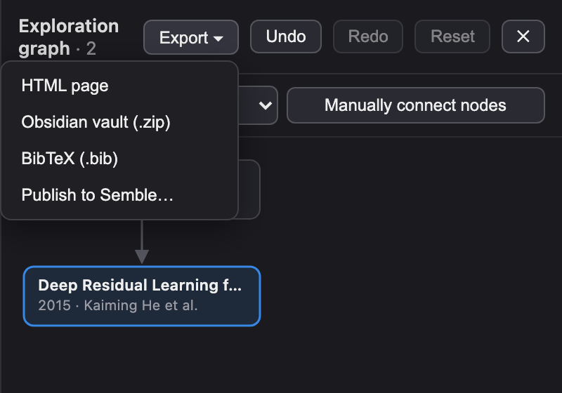
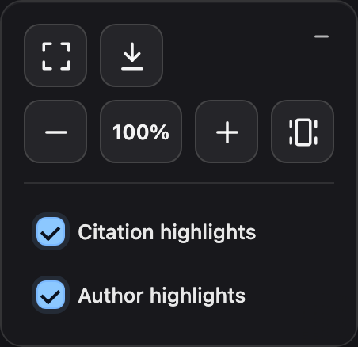

Usage guide
Using Paper Browser
Read a paper, click its citations, and keep the whole trail — then export it as a graph, an Obsidian vault, or a BibTeX file.
First time here? Add a free OpenAlex API key before you start — follow the two-minute setup guide. Citation lookups are slow and rate-limited without one.
Open a paper
Click the Paper Browser toolbar icon while viewing an arXiv page or any research PDF, and
the paper opens in the annotated viewer. You can also use the viewer’s address bar
directly: paste an arXiv id (like 1706.03762), a PDF or paper-page URL, or a
Google Scholar / Semantic Scholar author URL, then press Load. Local
files work too, via Upload PDF.

Click inline citations
In-text citation markers like [13] or (Smith, 2020) are
highlighted. Hover one to preview the cited work — title, authors, year,
venue, and abstract. Click it to resolve the cited paper and open its
PDF in the same tab, so you never lose your place; use the back/forward arrows
(or Alt+←/→) to move along the trail. If no open-access PDF is known, the preview offers
Search web for PDF, and papers with no PDF at all open their publisher
page in a new tab instead.

[13] previews the cited paper; clicking opens it in place.Highlighted author names on the title page work the same way — click one to open that author’s profile and list of works.
Citation and author lists
The Citations and Authors buttons in the toolbar open dropdown panels for the current paper. The citations panel lists every parsed reference — Find highlights where it’s cited in the text, and PDF opens the cited paper. The authors panel lists the paper’s authors with how often each is mentioned; Open shows their profile and works.


The exploration graph
The graph panel records your session as you read. Papers you open directly become roots; papers opened by clicking a citation become children of the paper you were reading, with an arrow meaning “cited by the paper above”. Author pages join the graph the same way.
- Revisit: click any node to bring that paper back up; hover for its details.
- Rearrange: drag nodes anywhere, or use the sort menu (by year or citation count); Reset restores the automatic layout.
- Edit: remove a node with its ×, click an edge to delete it, or use Manually connect nodes to add a citation edge yourself. Undo/Redo cover every edit.

Export your session
The graph’s Export menu saves the whole exploration:
- HTML page — a self-contained interactive page of the graph. You can re-import it later with Resume session in the toolbar.
- Obsidian vault (.zip) — one note per paper plus a canvas of the graph, ready to drop into Obsidian.
- BibTeX (.bib) — a compiled bibliography of every paper in the graph, with whatever metadata the session collected (authors, year, venue, DOI, arXiv id, URL).
- Publish to Semble — share the exploration as a Semble collection.

Reading controls
The floating controls in the top-left corner of the PDF handle the reading view: fullscreen, download, zoom, and toggles for the citation and author highlights if you’d rather see the PDF’s original links. When space is tight the controls collapse into a single button that expands on click. Zoom works four ways:
- Pinch on the trackpad (or Ctrl + mouse wheel) over the PDF.
- The − / + buttons.
- Type a percentage into the % field and press Enter (25–300%).
- Fit page — the rightmost button scales the current page so its top and bottom are both in view, centered in the window.
Zooming keeps your reading position in the document.
